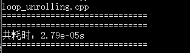
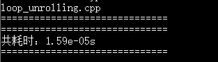
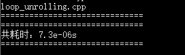

C++性能榨汁机之循环展开
什么是循环展开？
循环展开，英文中称（Loop unwinding或loop unrolling），是一种牺牲程序的尺寸来加快程序的执行速度的优化方法。可以由程序员完成，也可由编译器自动优化完成。循环展开最常用来降低循环开销，为具有多个功能单元的处理器提供指令级并行。也有利于指令流水线的调度。
循环展开对程序性能的影响
我们直接以实际代码向大家展示循环展开的作用，首先看未经过循环展开优化的代码：
1 | #include <iostream> |
类似于上面的这段代码是我们平常工作中经常见到的，函数目的就是求得1+2+……+9998+9999的累加和，每次循环把i累加到sum变量上，循环次数一共10000次。代码运行结果如下：

可以看出代码运行耗时0.0000279秒。
下面我们将循环展开一次，即把上述代码中的循环改为如下代码：
1 | for(int i = 0;i < count;i += 2){ |
即每次循环将i和i+1一起累加到sum变量上，这样可以把循环次数从10000次降低到5000次，由于CPU的高度流水线化，连续两个加法指令增加耗时很低，所以此版本代码可以一定程度上提高程序运行速度，运行结果如下：

代码运行耗时0.0000159秒，相较于未优化代码速度快了将近一倍。
当然，我们可以继续增加循环展开次数以进一步提高程序运行速度，但是这个增加循环展开次数也是有限度的，当达到了CPU的最高吞吐量之后，继续增加循环展开次数是没有意义的。
上述循环展开后的代码依然有进一步优化的空间，那就是消除连续指令的相关性，以达到指令级并行，我们可以看到循环展开后的代码，循环体中有两条语句：sum += i 和 sum += i+1，第二条语句sum += i+1依赖于第一条命来sum += i的执行结果，所以这两条语句只能依次执行，限制了CPU进一步提高性能的可能。如果我们将循环体改为如下代码：
1 | int sum1=0,sum2=0; |
我们新建了两个变量sum1和sum2用于存储循环展开时两个累加语句的累加结果，最后在循环体外将两部分结果相加得到最终结果。该代码中两个累加语句之间是互不相关的，所以CPU可以并行执行这两条指令，以达到性能的进一步提高。下面是运行结果：

代码运行耗时0.0000073秒，相较于只进行循环展开的代码速度又快了将近一倍。
总结
由上面三段代码的运行速度对比可以看出，循环展开对程序性能有着很重要的影响，可以减少分支预测错误次数，增加取消数据相关进一步利用并行执行提高速度的机会。但是，并不建议大家进行手动的循环展开，在代码中进行循环展开会导致程序的可读性下降，代码膨胀。为了直观感受循环展开对性能的影响，上述代码运行结果均是在不开编译器优化的情况下进行的测试，其实在我们开启了编译器优化的时候，编译器会自动对我们的循环代码进行循环展开，让我们可以在保持了代码可读性的同时，又能享受到循环展开对我们程序性能的提高。